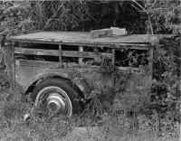

<!DOCTYPE HTML PUBLIC "-//W3C//DTD HTML 4.01 Transitional//EN"        "http://www.w3.org/TR/html4/loose.dtd">
<html lang="en">

<head>
<title>Miller Williams: Cantaloupes - Henderson State University</title>
<meta http-equiv="Content-Language" content="en-us">
<meta http-equiv="Content-Type" content="text/html; charset=windows-1252">
<meta name="GENERATOR" content="Microsoft FrontPage 5.0">
<meta name="ProgId" content="FrontPage.Editor.Document">
<meta name="copyright" content="Copyright © 2002 Henderson State University">
<meta name="rating" content="General">
</head>

<body background="ARlogoborder.jpg" link="#006600" vlink="#006600" alink="#006600" bgcolor="#FFFFFF"><div style="background:#241b2e;color:#fff;font-family:Arial,sans-serif;font-size:13px;padding:7px 14px;text-align:center;position:relative;z-index:9999;"><a href="/books/arkansas-literary-forum" style="color:#fff;text-decoration:underline;">‚Üê Back to MarckBeggs.com</a> &nbsp;|&nbsp; <span style="opacity:.75;">Arkansas Literary Forum archive, preserved as originally published</span></div>

<div align="right">
  <table border="0" width="85%">
    <tr>
      <td width="100%" align="left">
        <blockquote>
          <p class="MsoNormal" style="mso-layout-grid-align:none;text-autospace:none"><b><span style="font-size:18.0pt;mso-bidi-font-size:12.0pt;font-family:Arial"><font color="#006600">Miller
          Williams<o:p>
          </o:p>
          </font>
          </span></b></p>
        </blockquote>
        <p class="MsoNormal" style="mso-layout-grid-align:none;text-autospace:none"><b><span style="font-size:14.0pt;mso-bidi-font-size:12.0pt">Cantaloupes<o:p>
        </o:p>
        </span></b></p>
        <p class="MsoNormal" style="mso-layout-grid-align:none;text-autospace:none"><b><font size="7"><a href="images/hicksM.jpg">
        </a></font><font color="#006600" size="5">A</font></b><span style="font-size:12.0pt">fter washing his tennis shoes, Kelvin Fletcher had tied the
        strings of the two together and hung them over a clothesline to dry.<span style="mso-spacerun:
yes"> </span>Even in the August sun it took more than four hours, and
        though he had made a bowknot, the shrinking of the laces made them
        difficult to separate.<span style="mso-spacerun: yes"> </span>He
        was already running late.<span style="mso-spacerun: yes"> </span>He
        didn't want to make Roy Dean Cummins wait on him.<o:p>
        </o:p>
        </span></p>
        <p class="MsoNormal" style="mso-layout-grid-align:none;text-autospace:none"><span style="font-size:12.0pt">Roy Dean had moved to town only a couple of months ago, and he
        was already popular in school.<o:p>
        </o:p>
        </span></p>
        <p class="MsoNormal" style="mso-layout-grid-align:none;text-autospace:none"><span style="font-size: 12.0pt">"</span><span style="font-size:12.0pt">He seems awfully nice," mothers would say when they
        met him.<span style="mso-spacerun: yes"> </span>And he did.<span style="mso-spacerun: yes">
        </span>He was as nice as anybody Kelvin Fletcher had ever met.<span style="mso-spacerun: yes">
        </span>But he was also very smartóhe was ahead of the class he came
        intoóand he was good-looking in a way that Kelvin had always wanted to
        be.<o:p>
        </o:p>
        </span></p>
        <p class="MsoNormal" style="mso-layout-grid-align:none;text-autospace:none"><span style="font-size:12.0pt">Still, the mothers were right to like him.<span style="mso-spacerun: yes">
        </span>He said always yes, ma'am and May I, please, and smiled at them.<o:p>
        </o:p>
        </span></p>
        <p class="MsoNormal" style="mso-layout-grid-align:none;text-autospace:none"><span style="font-size:12.0pt">Sometimes, when he saw how the girls at school liked to be with
        Roy Dean, Kelvin didn't want to like him at all, but he did.<span style="mso-spacerun: yes">
        </span>Everybody did. He
        was just a nice person.<o:p>
        </o:p>
        </span></p>
        <p class="MsoNormal" style="mso-layout-grid-align:none;text-autospace:none"><span style="font-size:12.0pt">This was Kelvin's first chance to get to know him better, maybe
        even to be friends with him, although Roy Dean didn't really seem to
        have any friends, strange as that was, considering that he was the
        center of things wherever he wentóa dance after school, where he
        danced better than anybody else but never showed off, or just at the
        snack shop, where he fed the juke box but didn't usually choose the
        records.<o:p>
        </o:p>
        </span></p>
        <p class="MsoNormal" style="mso-layout-grid-align:none;text-autospace:none"><span style="font-size:12.0pt">When Jennie Thornburg invited the whole class for a picnic out at
        her placeóa big farm the river bends aroundóRoy Dean asked how to
        get there.<span style="mso-spacerun:
yes"> </span>He didn't ask Kelvin, exactly.<span style="mso-spacerun: yes">
        </span>He asked whoever heard him, and Kelvin answered.<o:p>
        </o:p>
        </span></p>
        <p class="MsoNormal" style="mso-layout-grid-align:none;text-autospace:none"><span style="font-size:12.0pt">It would have been simple enough to draw a map, but Kelvin said
        he would ride his bicycle and that Roy Dean could ride along with him.<span style="mso-spacerun:
yes"> </span>He expected Roy Dean to say, "Why don't you just draw me
        a map?" but instead he said, "That'll be fine; thank you very
        much."<o:p>
        </o:p>
        </span></p>
        <p class="MsoNormal" style="mso-layout-grid-align:none;text-autospace:none"><span style="font-size: 12.0pt">"</span><span style="font-size:12.0pt">I'll come by your house," Kelvin said.<span style="mso-spacerun: yes">
        </span><span style="font-size: 12.0pt">
        "</span>What?<span style="mso-spacerun: yes"> </span>About
        nine?"<o:p>
        </o:p>
        </span></p>
        <p class="MsoNormal" style="mso-layout-grid-align:none;text-autospace:none"><span style="font-size: 12.0pt">"</span><span style="font-size:12.0pt">You don't know where I live."<o:p>
        </o:p>
        </span></p>
        <p class="MsoNormal" style="mso-layout-grid-align:none;text-autospace:none"><span style="font-size: 12.0pt">"</span><span style="font-size:12.0pt">No."<o:p>
        </o:p>
        </span></p>
        <p class="MsoNormal" style="mso-layout-grid-align:none;text-autospace:none"><span style="font-size: 12.0pt">"</span><span style="font-size:12.0pt">I'll meet you in front of the school.<span style="mso-spacerun: yes">
        </span>No need for you to go out of your <o:p>
        way."<o:p>
        </o:p>
        </span></p>
        <o:p>
        <p class="MsoNormal" style="mso-layout-grid-align:none;text-autospace:none"><span style="font-size: 12.0pt">"</span><span style="font-size:12.0pt">About nine?"<o:p>
        </o:p>
        </span></p>
        <p class="MsoNormal" style="mso-layout-grid-align:none;text-autospace:none"><span style="font-size: 12.0pt">"</span><span style="font-size:12.0pt">How far is it?"<o:p>
        </o:p>
        </span></p>
        <p class="MsoNormal" style="mso-layout-grid-align:none;text-autospace:none"><span style="font-size: 12.0pt">"</span><span style="font-size:12.0pt">Pretty far."<o:p>
        </o:p>
        </span></p>
        <p class="MsoNormal" style="mso-layout-grid-align:none;text-autospace:none"><span style="font-size: 12.0pt">"</span><span style="font-size:12.0pt">Whenever," Roy Dean said.<span style="mso-spacerun: yes">
        </span>A little impatiently, Kelvin thought, but not <o:p>
        unkindly.<o:p>
        </o:p>
        </span></p>
        <o:p>
        <p class="MsoNormal" style="mso-layout-grid-align:none;text-autospace:none"><span style="font-size:12.0pt">And soon they would be together, riding side by side, talking
        about things.<span style="mso-spacerun: yes"> </span>Everybody at
        the party would see them riding up together.<o:p>
        </o:p>
        </span></p>
        <p class="MsoNormal" style="mso-layout-grid-align:none;text-autospace:none"><span style="font-size:12.0pt">He got the laces separated and the shoes on his feet and was on
        the bicycle in time to get to the schoolyard by ten after nine, no
        matter that he hadn't taken time for breakfast.<o:p>
        </o:p>
        </span></p>
        <p class="MsoNormal" style="mso-layout-grid-align:none;text-autospace:none"><span style="font-size:12.0pt">Roy Dean was waiting for him, sitting on the grass, watching cars
        go by, <o:p>
        his
        bicycle lying on its side behind him.<span style="mso-spacerun: yes">
        </span>He didn't seem irritated.<span style="mso-spacerun: yes"> </span>He
        just smiled.<o:p>
        </o:p>
        </span></p>
        <o:p>
        <p class="MsoNormal" style="mso-layout-grid-align:none;text-autospace:none"><span style="font-size:12.0pt">They rode the first mile in silence.<o:p>
        </o:p>
        </span></p>
        <p class="MsoNormal" style="mso-layout-grid-align:none;text-autospace:none"><span style="font-size: 12.0pt">"</span><span style="font-size:12.0pt">Do you like it here O.K.?" Kelvin asked.<o:p>
        </o:p>
        </span></p>
        <p class="MsoNormal" style="mso-layout-grid-align:none;text-autospace:none"><span style="font-size: 12.0pt">"</span><span style="font-size:12.0pt">Sure," said Roy Dean.<o:p>
        </o:p>
        </span></p>
        <p class="MsoNormal" style="mso-layout-grid-align:none;text-autospace:none"><span style="font-size:12.0pt">Then they rode in silence a while longer.<o:p>
        </o:p>
        </span></p>
        <p class="MsoNormal" style="mso-layout-grid-align:none;text-autospace:none"><span style="font-size: 12.0pt">"</span><span style="font-size:12.0pt">Are you going to go to college?" Kelvin asked.<o:p>
        </o:p>
        </span></p>
        <p class="MsoNormal" style="mso-layout-grid-align:none;text-autospace:none"><span style="font-size: 12.0pt">"</span><span style="font-size:12.0pt">Sure," said Roy Dean.<o:p>
        </o:p>
        </span></p>
        <p class="MsoNormal" style="mso-layout-grid-align:none;text-autospace:none"><span style="font-size:12.0pt">And so forth.<o:p>
        </o:p>
        </span></p>
        <p class="MsoNormal" style="mso-layout-grid-align:none;text-autospace:none"><span style="font-size:12.0pt">Then they rode in silence a while longer.<o:p>
        </o:p>
        </span></p>
        <p class="MsoNormal" style="mso-layout-grid-align:none;text-autospace:none"><span style="font-size:12.0pt">And then the chain on Roy Dean's bicycle broke.<span style="mso-spacerun: yes">
        </span>Kelvin offered to walk with him to push their bikes the rest of
        the way.<span style="mso-spacerun: yes"> </span>Roy Dean wouldn't
        hear of it.<span style="mso-spacerun: yes"> </span>Then Kelvin
        offered to carry Roy Dean on his bike the rest of the way, with the
        other one hidden in the woods.<o:p>
        </o:p>
        </span></p>
        <p class="MsoNormal" style="mso-layout-grid-align:none;text-autospace:none"><span style="font-size: 12.0pt">"</span><span style="font-size:12.0pt">Let's hitch-hike," Roy Dean said.<span style="mso-spacerun: yes">
        </span><span style="font-size: 12.0pt">
        "</span>If we can hide one, we can hide them <o:p>
        both.<span style="mso-spacerun: yes">
        </span>We can come back later and pick them up."<o:p>
        </o:p>
        </span></p>
        <o:p>
        <p class="MsoNormal" style="mso-layout-grid-align:none;text-autospace:none"><span style="font-size: 12.0pt">"</span><span style="font-size:12.0pt">We'll have to hide them real good," Kelvin said.<span style="mso-spacerun:
yes">  </span><span style="font-size: 12.0pt"> "</span>I had to save two years to buy mine."<o:p>
        </o:p>
        </span></p>
        <p class="MsoNormal" style="mso-layout-grid-align:none;text-autospace:none"><span style="font-size: 12.0pt">"</span><span style="font-size:12.0pt">We'll cover them with leaves.<span style="mso-spacerun: yes">
        </span>Don't worry about it."<o:p>
        </o:p>
        </span></p>
        <p class="MsoNormal" style="mso-layout-grid-align:none;text-autospace:none"><span style="font-size: 12.0pt">"</span><span style="font-size:12.0pt">I'm not worried."<o:p>
        </o:p>
        </span></p>
        <p class="MsoNormal" style="mso-layout-grid-align:none;text-autospace:none"><span style="font-size:12.0pt">The place was marked in their minds by telephone poles and a
        silo, and the bicycles were chained together to a small tree and buried
        under all manner of leaves and limbs.<o:p>
        </o:p>
        </span></p>
        <p class="MsoNormal" style="mso-layout-grid-align:none;text-autospace:none"><span style="font-size:12.0pt">Kelvin and Roy Dean stood for an hour with their thumbs out, with
        no luck at all.<span style="mso-spacerun: yes"> </span>Once four
        girls in a blue convertible, girls not from their school, slowed down
        and threw them kisses and laughed and then speeded up and left them.<o:p>
        </o:p>
        </span></p>
        <p class="MsoNormal" style="mso-layout-grid-align:none;text-autospace:none"><span style="font-size: 12.0pt">"</span><span style="font-size:12.0pt">Bitches," Roy Dean said.<span style="mso-spacerun: yes">
        </span><span style="font-size: 12.0pt">
        "</span>Frigginí bitches."<o:p>
        </o:p>
        </span></p>
        <p class="MsoNormal" style="mso-layout-grid-align:none;text-autospace:none"><span style="font-size:12.0pt">ìBitches," Kelvin said.<o:p>
        </o:p>
        </span></p>
        <p class="MsoNormal" style="mso-layout-grid-align:none;text-autospace:none"><span style="font-size:12.0pt">Roy Dean looked sidewise at Kelvin and barely smiled.<o:p>
        </o:p>
        </span></p>
        <p class="MsoNormal" style="mso-layout-grid-align:none;text-autospace:none"><span style="font-size: 12.0pt">"</span><span style="font-size:12.0pt">If I was in a car and they were walking," Kelvin said,
        "I would have picked them up."<o:p>
        </o:p>
        </span></p>
        <p class="MsoNormal" style="mso-layout-grid-align:none;text-autospace:none"><span style="font-size: 12.0pt">"</span><span style="font-size:12.0pt">No Kidding," Roy Dean said.<span style="mso-spacerun: yes">
        </span>He walked across the country road and set himself to hitch-hike
        in the other direction.<o:p>
        </o:p>
        </span></p>
        <p class="MsoNormal" style="mso-layout-grid-align:none;text-autospace:none"><span style="font-size: 12.0pt">"</span><span style="font-size:12.0pt">You're not going to the party?" Kelvin asked him,
        raising his voice to speak across the road.<o:p>
        </o:p>
        </span></p>
        <p class="MsoNormal" style="mso-layout-grid-align:none;text-autospace:none"><span style="font-size: 12.0pt">"</span><span style="font-size:12.0pt">By the time we got a ride, there wouldn't be any
        party."<o:p>
        </o:p>
        </span></p>
        <p class="MsoNormal" style="mso-layout-grid-align:none;text-autospace:none"><span style="font-size: 12.0pt">"</span><span style="font-size:12.0pt">I guess not."<o:p>
        </o:p>
        </span></p>
        <p class="MsoNormal" style="mso-layout-grid-align:none;text-autospace:none"><span style="font-size: 12.0pt">"</span><span style="font-size:12.0pt">Come on," Roy Dean said.<span style="mso-spacerun: yes">
        </span><span style="font-size: 12.0pt">
        "</span>I'll buy you a beer.<o:p>
        </o:p>
        </span></p>
        <p class="MsoNormal" style="mso-layout-grid-align:none;text-autospace:none"><span style="font-size:12.0pt">Kelvin had never had a beer.<o:p>
        </o:p>
        </span></p>
        <p class="MsoNormal" style="mso-layout-grid-align:none;text-autospace:none"><span style="font-size:12.0pt">A farmer stopped in a pickup truck that must have been as old as
        the man.<span style="mso-spacerun: yes"> </span>A loose front
        fender bounced and clanged when the idling engine shook the frame of the
        truck.<span style="mso-spacerun:
yes"> </span>The farmer had a large brown dog in the front seat, so there
        was room for only one more.<span style="mso-spacerun: yes"> </span>Roy
        Dean insisted on getting in the back, with a load of cantaloupes, and
        told Kelvin to get in the cab.<o:p>
        </o:p>
        </span></p>
        <p class="MsoNormal" style="mso-layout-grid-align:none;text-autospace:none"><span style="font-size:12.0pt">This was partly, Kelvin surmised, because the old man smelled
        bad.<span style="mso-spacerun: yes"> </span>They could tell that
        as soon as they opened the door, even on the passenger side.<span style="mso-spacerun: yes">
        </span>It wasn't the dog.<span style="mso-spacerun: yes"> </span>Kelvin
        saw Roy Dean wrinkle his nose.<o:p>
        </o:p>
        </span></p>
        <p class="MsoNormal" style="mso-layout-grid-align:none;text-autospace:none"><span style="font-size:12.0pt">They drove as slow as the man talked, dragging out his words and
        forgetting what he had said.<span style="mso-spacerun: yes"> </span>He
        talked mostly about his family, the wife poorly, the son and daughter
        gone, and about the county, how much it had changed, about his dog, and
        then Kelvin stopped listening.<span style="mso-spacerun: yes"> </span>He
        looked around and saw Roy Dean lobbing a cantaloupe into the woods that
        ran beside the road, then another one.<span style="mso-spacerun: yes">
        </span>Kelvin was terrified.<span style="mso-spacerun: yes"> </span>When
        he gathered the nerve, a couple of miles later, to look again, the pale
        dirty orange balls were flying in easy arcs, one to the left, then to
        the right, then to the left.<span style="mso-spacerun:
yes"> </span>He saw then, with guilty relief, that the side view mirror
        had no glass in it and the rearview mirror hung swaying in its socket.<span style="mso-spacerun: yes">
        </span>When he looked again, cantaloupes were dropping over the side
        like bombs from Roy Dean's extended arm.<span style="mso-spacerun: yes">
        </span>As the truck would barely outrun them, down a hill, they would
        veer off into a ditch.<o:p>
        </o:p>
        </span></p>
        <p class="MsoNormal" style="mso-layout-grid-align:none;text-autospace:none"><span style="font-size:12.0pt">Kelvin wanted to get out of the truck, but there was nothing he
        could do but sit where he was.<span style="mso-spacerun: yes"> </span>He
        patted the dog.<o:p>
        </o:p>
        </span></p>
        <p class="MsoNormal" style="mso-layout-grid-align:none;text-autospace:none"><span style="font-size:12.0pt">When they pulled into town, they bumped off the road and stopped
        at a gas station.<o:p>
        </o:p>
        </span></p>
        <p class="MsoNormal" style="mso-layout-grid-align:none;text-autospace:none"><span style="font-size: 12.0pt">"</span><span style="font-size:12.0pt">I can take you a little farther after I fill up," the
        farmer said.<span style="mso-spacerun: yes"> </span>Kelvin looked
        back at Roy Dean, jumping from the bed of the truck, empty now except
        for three melons still rolling around the bed. Kelvin didn't know what
        to say to the farmer so he didn't say anything.<span style="mso-spacerun: yes">
        </span>He<span style="mso-spacerun:
yes"> </span>got out of the cab and ran as fast as he could after Roy
        Dean, already lost<span style="mso-spacerun: yes"> </span>up a
        side street.<o:p>
        </o:p>
        </span></p>
        <p class="MsoNormal" style="mso-layout-grid-align:none;text-autospace:none"><span style="font-size:12.0pt">They didn't stop running until they got to the schoolyard.<span style="mso-spacerun: yes">
        </span>They stood there panting, looking at each other.<span style="mso-spacerun: yes">
        </span>Roy Dean let out a tiny chuckle, then a louder one.<span style="mso-spacerun: yes">
        </span>Kelvin forced a kind of smile in the corners of his mouth and
        then he looked away toward the fields at the edge of town.<span style="mso-spacerun: yes">
        </span>Roy Dean suddenly laughed so loud that Kelvin jumped.<o:p>
        </o:p>
        </span></p>
        <p class="MsoNormal" style="mso-layout-grid-align:none;text-autospace:none"><span style="font-size: 12.0pt">"</span><span style="font-size:12.0pt">You better get your daddy or somebody to drive you out and
        pick up the bikes," Roy Dean said.<span style="mso-spacerun: yes">
        </span><span style="font-size: 12.0pt">
        "</span>They're gonna rust under those leaves."<span style="mso-spacerun: yes">
        </span>Then he saw something down the street that attracted his
        attention and he started walking in that direction.<span style="mso-spacerun: yes">
        </span><o:p>
        </o:p>
        </span></p>
        <p class="MsoNormal" style="mso-layout-grid-align:none;text-autospace:none"><span style="font-size:12.0pt">When the two of them spoke after that, which was not often, they
        never mentioned the cantaloupes.<span style="mso-spacerun: yes"> </span>More
        than he wanted to, though, Kelvin thought about the farmer, what he said
        to his wife when he got home.<span style="mso-spacerun: yes"> </span>He
        guessed that Roy Dean was probably going to be an important man someday,
        because it didnít bother him at all.<span style="mso-spacerun: yes">
        </span>And everybody liked him.<span style="mso-spacerun: yes">
        </span><o:p>
        </o:p>
        </span></p>
        <p class="MsoNormal" style="mso-layout-grid-align:none;text-autospace:none"><span style="font-size:12.0pt"><o:p>
        </o:p>
        </span></p>
        <p class="MsoNormal" style="mso-layout-grid-align:none;text-autospace:none" align="right"><o:p><font size="2">(Photo
        by M. Hicks) </font></o:p>
        </td>
    </tr>
  </table>
</div>

<p align="center"><a title="Select to go to the Home Page" href="2000.html">HOME</a></p>

</body>

</html>